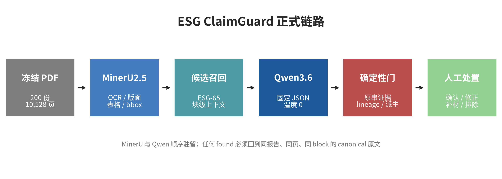
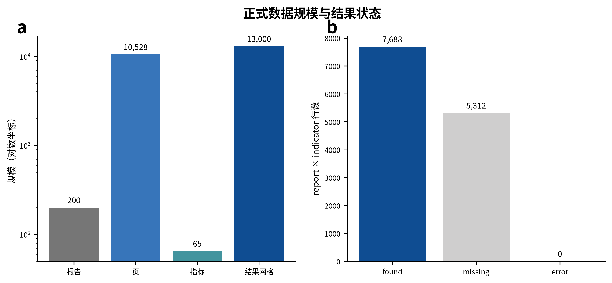
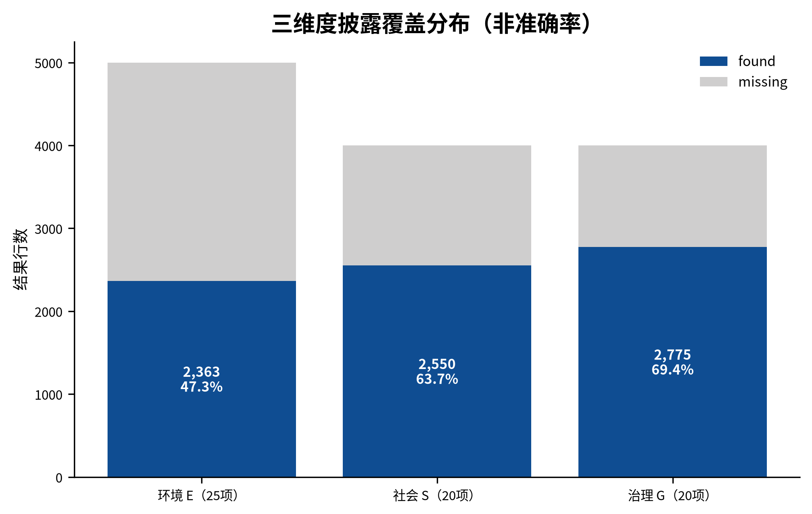
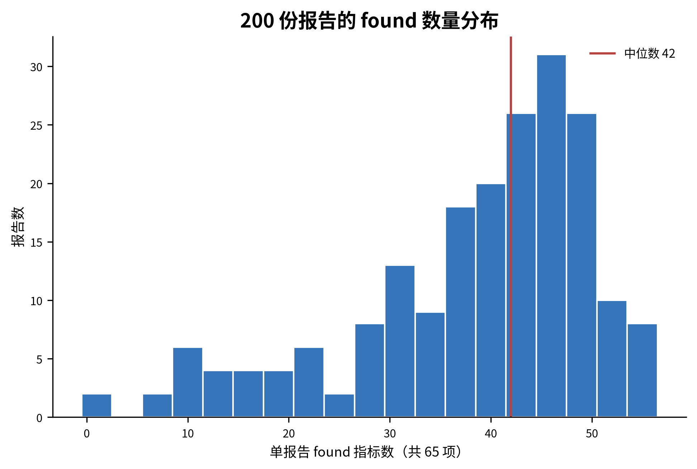
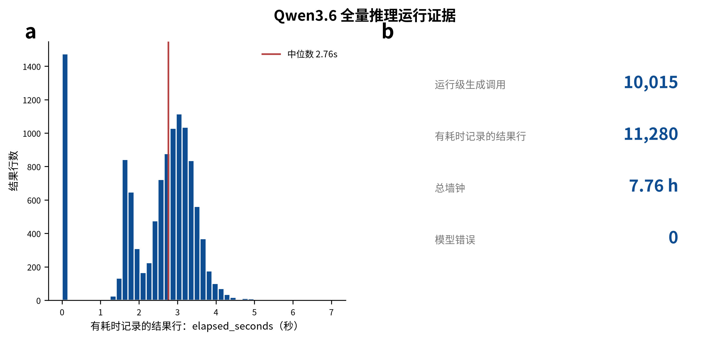
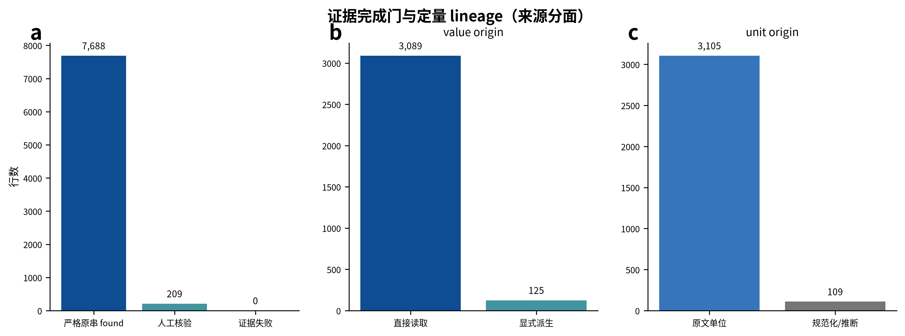

顺序部署把文档感知、语义抽取和确定性证据门分离，并保留人工处置出口。

正式链路完整覆盖 200×65 网格，结果只含 found/missing。

found 分布在 E/S/G 三个维度间存在差异，但这里只表示语料披露覆盖。

不同报告的 ESG-65 found 数量呈现明显离散分布。

Qwen3.6 全量生成调用在单卡顺序链路中完成且 error=0；耗时直方图仅统计具有 elapsed_seconds 的结果行。

完成门分别呈现数值来源与单位来源，并把 found 结果绑定到严格原串证据。
